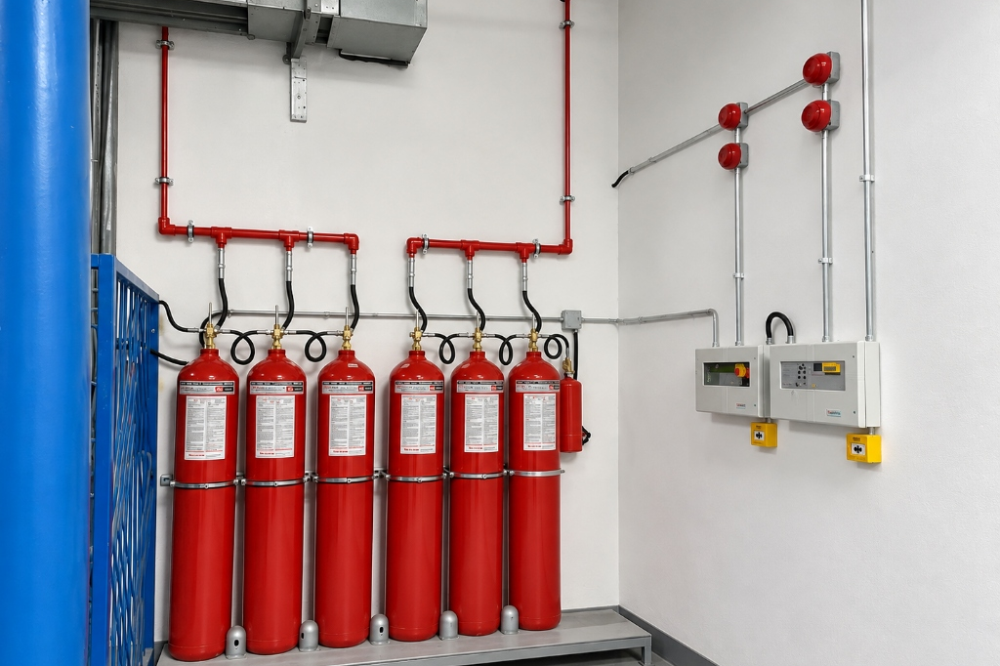
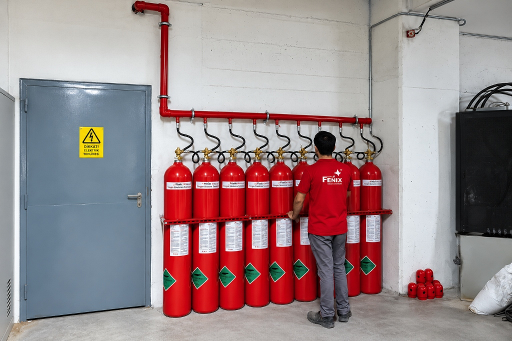
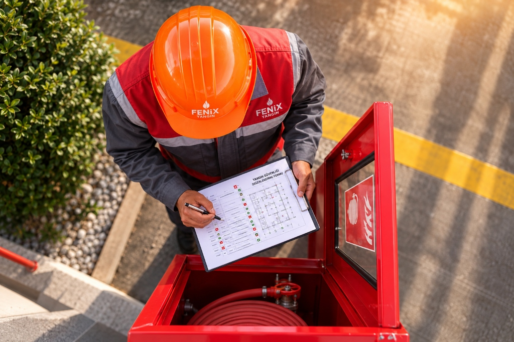

Trafo Yangın Söndürme
Sistemleri
Trafo yangın söndürme sistemleri, insansız mahallerde karbondioksit (CO₂) gazının ortamdaki oksijeni hızla düşürmesi ve şok soğutma etkisiyle yüksek söndürme gücü sağlayan sistemlerdir.
Elektriksel iletkenliği bulunmayan, derin ve lokal yangınlarda etkili olan karbondioksit gazlı yangın söndürme sistemleri; trafo odaları, güç aktarım merkezleri ve kablo galerileri gibi insansız kapalı hacimlerde güvenle uygulanır.

Trafo Yangın Söndürme Sistemleri Nedir?
Trafo yangın söndürme sistemleri, insansız mahallerde tercih edilen sistemlerdir. Bu sistemlerin söndürme prensibi, karbondioksit (CO₂) gazının ortamdaki oksijen konsantrasyonunu çok hızlı bir şekilde düşürmesi ve boşalan gazın yarattığı şok etkisiyle ortam sıcaklığını düşürmesi şeklindedir.
Karbondioksit gazı, yangının ortamdaki hava ile etkileşime girmesinin önüne geçmektedir. Yangın bölgesinde bulunan ısınan ve yanmaya meyilli havayı püskürtüldüğü ortamda bastıran CO₂ gazlı söndürme sistemleri kapalı mekanlar için tercih edilmektedir.
Karbondioksit gazının kokusu ve rengi bulunmamaktadır. Alevleri büyüten oksijen gazını bastırarak yangının son bulmasında oldukça etkilidir. Elektriksel iletkenliği bulunmadığından elektrik akımının ve yüksek gerilim trafolarının yer aldığı kapalı hacimlerde kritik koruma sağlar.

CO₂ Gazlı Söndürme Sistemlerinin Güvenlik Açısından Önemi
İnsanlı Mahallerde Kesinlikle Kullanılmaz
Karbondioksit gazlı söndürme sistemleri çok etkili söndürme gücüne sahip oldukları gibi sistemin boşaldığı durumlarda mahalde insan varsa o insanın ölmesine yol açabilir. Bu yüzden insanlı mahallerde kesinlikle tercih edilmemektedir.
Trafo Yangın Söndürme Sistemlerinin Özellikleri
Kaynak metinde belirtilen temel sistemsel ve teknik özellikler aşağıda özetlenmiştir:
Söndürme kabiliyeti çok yüksektir; oksijeni hızla düşürerek yangını bastırır.
Kaynak metinde belirtildiği üzere ozon tabakasına zarar vermeyen bir gazdır.
Hacmin tamamının yanı sıra belirli bir ekipman veya noktada lokal uygulamada kullanılabilmektedir.
Zararlı ve boğucu etkisi nedeniyle kesinlikle sadece insansız mahallerde kurulabilir.
Yüzeysel alevlerin yanı sıra derinlemesine yanma eğilimi gösteren yangınlarda da kullanılabilir.
Elektriksel iletkenliği bulunmadığından trafo ve yüksek voltaj alanlarında ark riski yaratmaz.
Sistem boşaldığında ani sıcaklık düşüşü ve basınç boşalmasıyla ortamda toz/sis bulutu oluşturabilir.
Karbondioksit gazının yeniden dolum maliyeti diğer temiz gazlara oranla çok düşüktür.
Sistemin ortama gaz boşaltma süresi maksimum 60 saniyedir.
Karbondioksit Gazlı Yangın Söndürme Sistemleri Kullanım Alanları
Kaynak metinde tanımlanan karbondioksit gazlı yangın söndürme sistemlerinin başlıca kullanım alanları:
Yüksek voltajlı transformatörlerin ve trafo merkezlerinin korunması.
Enerji aktarım hatları ve güç iletim ekipmanlarının bulunduğu alanlar.
Yoğun enerji kablolarının geçtiği insansız kapalı galeriler ve kanallar.
Ağır sanayi motorları ve mekanik tahrik birimlerinin yer aldığı mahaller.
Yanıcı boya buharlarının bulunduğu endüstriyel uygulama kabinleri.
Akaryakıt, tiner ve yanıcı solvent içeren kapalı depolama hacimleri.
Orta ve alçak gerilim elektrik kontrol panolarının bulunduğu kapalı odalar.
CO₂ Gazlı Söndürme Sisteminin Temel Bileşenleri
Kaynak metinde tanımlanan karbondioksit gazlı yangın söndürme sisteminin temel yapı taşları:
Karbondioksit gazını yüksek basınç altında depolayan çelik silindir grubu. Tarafımızca yerli üretilebildiği gibi ithal seçenekleri de mevcuttur.
Karbondioksit gazının korunan mahalle homojen ve maksimum 60 saniyede püskürtülmesini sağlayan özel tasarımlı nozullar.
Gerek yerli üretim gerekse ithal sistemlerimizin tamamında kullanılan vanalar uluslararası onaylara sahiptir.
Yerli Üretim ve İthal Ürün Seçenekleri
Fenix Yangın olarak projelerinizin gereksinimlerine göre esnek imalat ve tedarik çözümleri sunuyoruz:
Karbondioksit gazlı söndürme sistemindeki silindirlerin ve nozulların imalatı tarafımızca yüksek kalite standartlarında yapılabilmektedir. Projelerinizde yerli üretim avantajıyla hızlı teslimat ve rekabetçi çözümler sunulur.
Müşterilerin tercihlerine göre silindir ve nozul grupları yurtdışından da ithal edilebilmektedir. Her iki sistem seçeneğinde de kullanılan vanalar uluslararası onaylara sahiptir.
Saha Uygulaması
CO₂ gazlı söndürme sistemlerinin kuruluşu uzman ekipler tarafından gerçekleştirilir. Trafo odaları, trafo merkezleri ve kompakt trafo köşklerinde uygulanan saha adımları:
İnsansız trafo mahali, havalandırma durumu ve kapalı alan riskleri incelenir.
Karbondioksit silindirleri ve uluslararası onaylı vana sistemleri sabitlenir.
Maksimum 60 saniyede homojen gaz dağıtımı yapacak boru ve nozul hatları kurulur.
Kontrol dışı boşalmayı önleyecek güvenlik tedbirleri alınarak sistem teslim edilir.

Trafo Yangın Söndürme Sistemleri Hakkında Sık Sorulan Sorular
Trafo yangın söndürme ve karbondioksit gazlı sistemler hakkında en çok merak edilen konular.
Karbondioksit gazlı yangın söndürme sistemleri başta trafo odaları olmak üzere güç aktarım odaları, kablo galerileri, motor odaları, boya kabinleri, yanıcı sıvı depolama alanları ve elektrik kontrol pano odalarında kullanılır.
Karbondioksit gazı ortamdaki oksijen oranını hızla düşürerek yangını söndürür. Ancak CO2 insanlar için zararlı bir gaz olduğundan ve sistemin boşaldığı anda ortamda insan bulunması can kaybına yol açabileceğinden bu sistemler kesinlikle insansız mahallerde tercih edilir.
Karbondioksit gazı insan sağlığı için tehlikelidir ve fazla maruz kalınmaması gerekir. Bakım-onarım veya ani müdahale gibi durumlarda mahale girilecekse sistemin kontrol dışında boşalmasının önüne geçmek için güvenlik önlemleri alınmalıdır.
Sistemin temel bileşenleri karbondioksit gazını muhafaza eden silindirler, gazı ortama ileten nozullar ve uluslararası onaylara sahip vana mekanizmalarıdır.
Evet. Karbondioksit gazlı söndürme sistemlerindeki silindir ve nozulların imalatı firmamızca yapılabildiği gibi müşterilerin tercihlerine göre yurtdışından ithal seçenekler de sunulmaktadır. Her iki sistemde kullanılan vanalar uluslararası onaylara sahiptir.
İlgili Hizmetler ve Sistemler
Fenix Yangın bünyesinde elektrik ve enerji mahallerinde sunduğumuz diğer tamamlayıcı sistemler.
İnsansız endüstriyel tesisler ve motor odaları için karbondioksit gazlı söndürme.
Sistemi İncele →Gaz tutma süresi ve mahalin sızdırmazlık bütünlüğünü değerlendirme testi.
Test Detayları →Elektrik kontrol panoları ve şalt hücreleri için mikro söndürme sistemleri.
Sistemi İncele →Projenize özel fiyat almak için ücretsiz çağrı merkezimizden bize ulaşın.
Bize Ulaşın →Trafo Odanız İçin Projeye Özel Teklif Alın
Projenize özel fiyat almak için iletişim sayfamız üzerinden ya da 0 (212) 618 07 01 ücretsiz çağrı merkezimizden tarafımıza ulaşabilirsiniz.